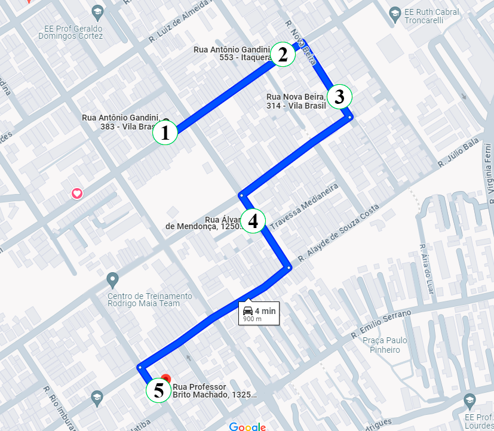
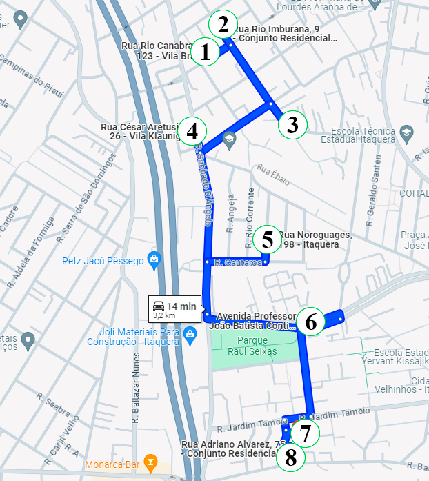
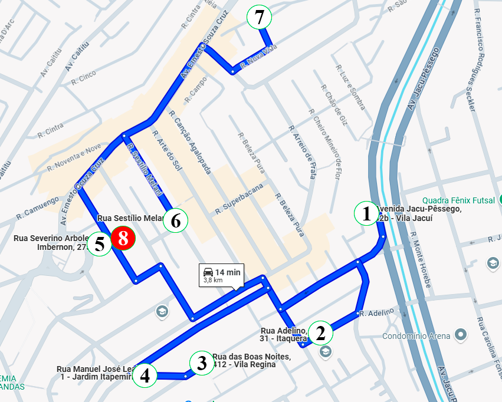
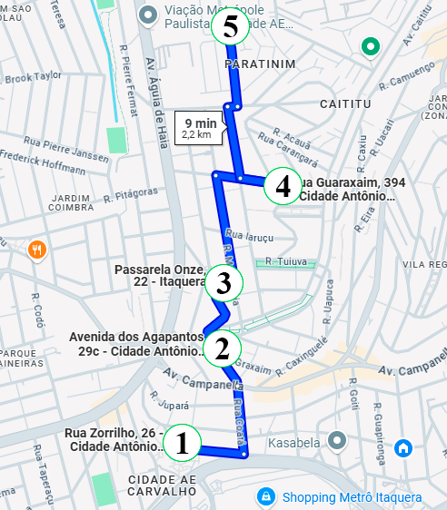
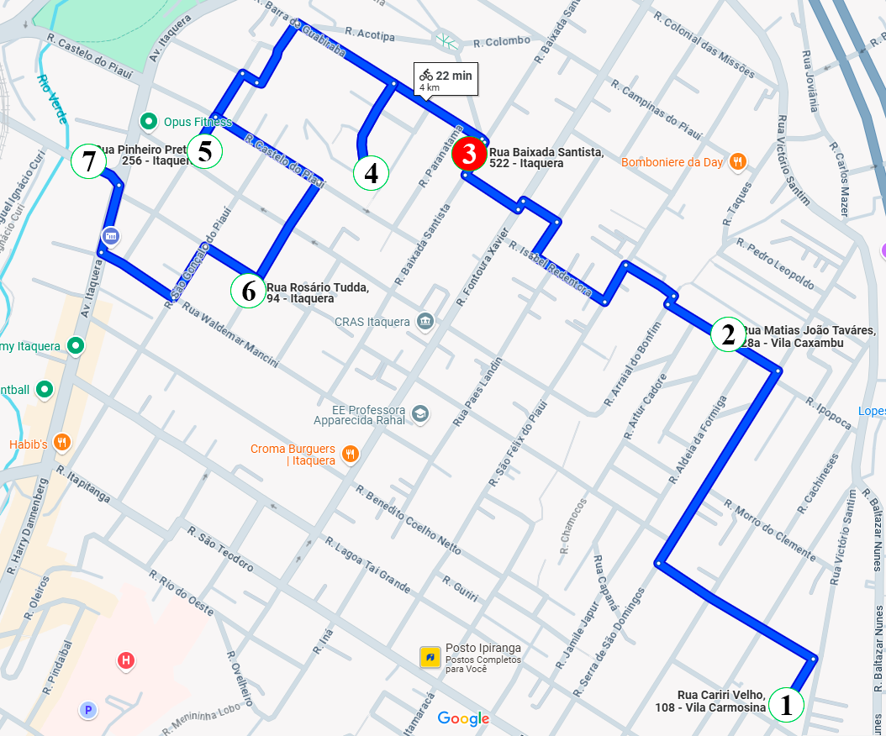
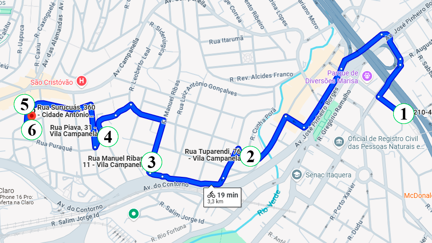
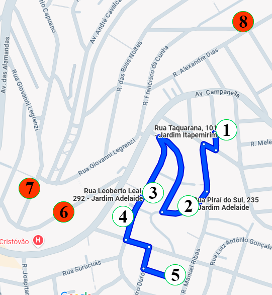

A2
- 05 Endereços
- 00 endereços para confirmar

A3
- 07 Endereços
- 00 endereços para confirmar

A4
- 07 Endereços
- 00 endereços para confirmar

A5
- 07 Endereços
- 00 endereços para confirmar

A7
- 07 Endereços
- 03 endereços para confirmar
- 01 Não visitar por enquanto

A9
- 06 Endereços
- 08 endereços para confirmar

A10
- 05 Endereços
- 00 endereços para confirmar
- 03 Não visitar por enquanto